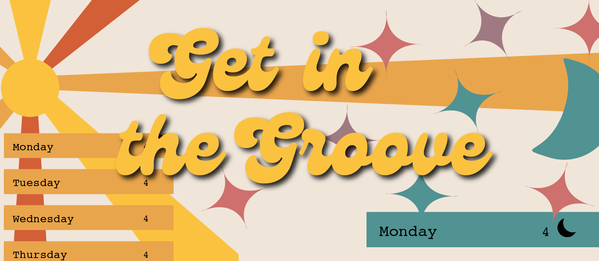

Get In The Groove

Get in the Groove is a to-do list style app fueled by morning and evening routines. In this app the user is able to set a custom morning and/or evening routine and reminders to ensure they get everything done. With so many distractions sometimes, routines can become interrupted. This app will allow you to finish your process and ensure everything, including the important things like brushing your teeth or taking medicine, are still in your morning or eveing groove. When the user completes their tasks for each day, they will earn a ray of sunshine or a twinkling star to celebrate their small victory! At the end of the week their sky is full if they accomplished their goals.